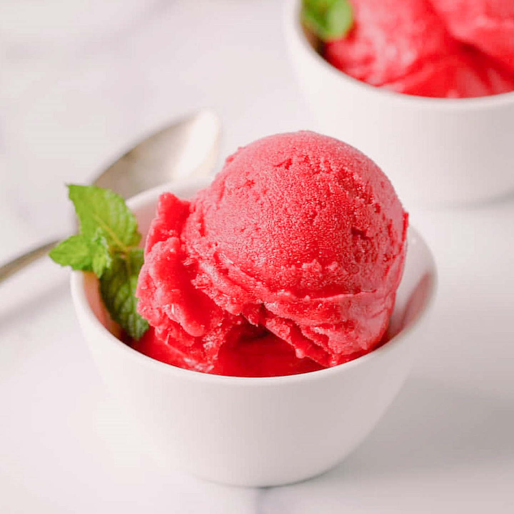

Raspberry Sorbet

Ingredients
- 4 cups raspberries (about 20 ounces)
- ¾ cup sugar
- ¼ cup water (hot tap water)
- 2 tablespoons lemon juice
Instructions
- Place hot tap water, lemon juice and sugar in a bowl
¾ cup sugar, ¼ cup water, 2 tablespoons lemon juice
- Mix until sugar is completely dissolved. This will take a few minutes. You can let it set for a few minutes and then stir again.
- Place raspberries in a food processor and process until all berries are pureed
4 cups raspberries
- Strain berries in a fine mesh sieve to remove all seeds. Use the bottom of soup ladle or a spatula to move raspberries through sieve. Discard seeds
- Add dissolved sugar mixture to raspberry puree and stir to combine
- Cover and refrigerate for at least 2 hours until chilled through
- Churn in an electric ice cream maker until mixture is frozen, about 20 minutes
- Remove sorbet from ice cream bowl into a freezer safe bowl
- Place in freezer for 2-4 hours to harden sorbet before serving